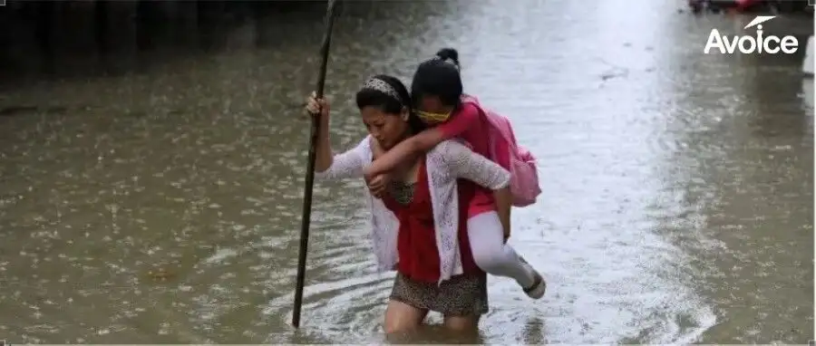
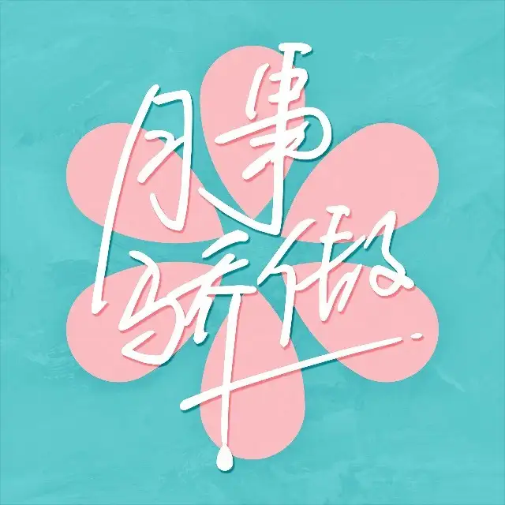
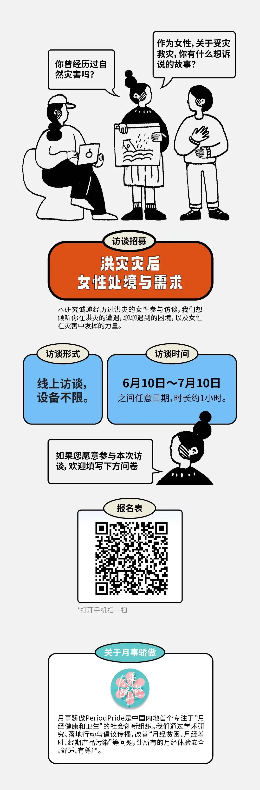

以下文章来源于月事骄傲PeriodPride ，作者月事骄傲

让所有的月经体验安全、舒适、有尊严。


灾难会平等地降临在每个人身上，
但不是所有人的需求都会被平等地看到。
联合国妇女署报告指出：在自然灾害导致的死亡人数中，妇女通常占多数。2004 年亚洲海啸中，印度尼西亚受灾严重的亚齐省里，死亡的人有70% 以上是女性。2008 年特强气旋风暴纳尔吉斯袭击缅甸伊洛瓦底三角洲后，据估计有 87% 的未婚妇女和 100% 的已婚妇女失去了她们的主要收入来源。
灾难降临以后，作为照护者的女性还会继续陷入另一重困境。基于传统性别角色分工，女性灾民往往需要承担照顾家庭与灾后重建的双重压力，同时妇幼卫生用品的稀缺、生殖健康服务的不到位，将更加严重的健康风险倾倒在女性灾民身上。
左右滑动查看更多
然而，性别敏感性在灾害后救援实践中却常被忽视。尽管近年来，已有越来越多的组织开始关注灾后的女性需求，但这些服务，是否能真的覆盖到广阔的女性需求？
因此，从性别视角出发，广泛听取女性灾民的灾后故事、发现女性灾民的特殊需求、寻找灾后重建过程中的女性力量，对于公益组织日后的救灾实践具有重要参考意义。
一项关于自然灾害下
女性处境与需求的研究
研究介绍
这是一项以“自然灾害下女性处境与需求”为主题的研究。本研究将聚焦洪灾这一特定灾害，旨在通过过往灾害受难女性的访谈，以及深入洪灾灾区女性群体的田野调查，发现自然灾害下女性灾民共同拥有却常被忽视的救助需求，关注女性的应灾韧性与重建力量，为日后改善针对女性需求的救援措施提供参考。
本研究诚邀经历过洪灾的女性报名参与此次访谈，我们想倾听您在洪灾的遭遇，聊聊遇到的困境，以及您所知的灾害中的女性力量。您的经历将帮助我们共同描绘出灾后女性处境与需求的全面图景。
如果你：
是一名女性，曾经经历过水灾
恳请您抽出约1小时的时间，在访谈中分享您的亲身经历以支持我们的学术研究，帮助更多不幸受水灾影响的女性平安舒适地度过应急与重建的阶段。
可能认识曾经经历过水灾的女性
请您把这条推送转发给她们，请她成为我们的受访者；如果她有不方便填写问卷之处（如不擅长使用电子设备），但您愿意协助她填写问卷与接受访谈，我们将不甚感激！
研究说明
此次访谈为月事骄傲“重建灾后性别友好空间”项目的研究数据。访谈将严格遵守研究伦理，对访谈资料进行严格地匿名化处理，对受访者访谈过程中透露的相关信息严格保密。
访谈招募对象
1、经历过水灾并受到灾情影响的女性；
2、在6月10日～7月30日之间拥有网络、可以接受线上访谈（设备不限）；
3、其余信息（如年龄、地区、职业等）不限，优先在村镇地区生活的女性。
访谈形式
线上访谈，设备不限
访谈时间
约1小时
说明
此次访谈采取志愿形式，访谈信息将会帮助月事骄傲“重建灾后性别友好空间”项目的开展与落实。
如果您愿意参与本次访谈，欢迎扫描下方海报二维码或是点击 “阅读原文”跳转至报名表报名，月事骄傲的研究者将会在一周内与您取得联系，感谢您的支持。

志愿者鸣谢
（排名不分先后，以首字母排序）
Eva
Eve
火火
夏夏
小许
圆子
Zudy
文案｜Eva
排版｜小可
视觉设计｜蓝灯
责编｜圆子